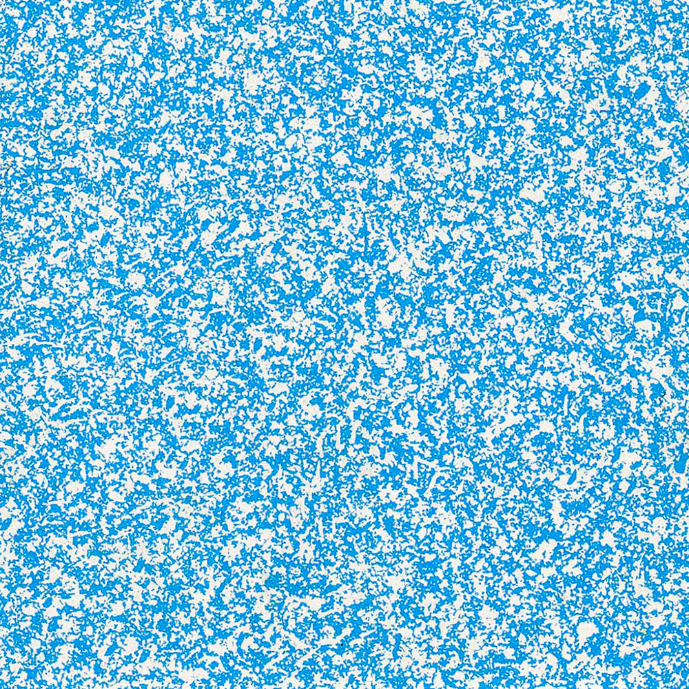

mit oder ohne is a photo series by Simon Freund taken with an old Polaroid camera on black and white film. The following memory shows 36 motives taken by Freund between 2019 and 2020 in a pair of two. One of them taken with flash and the other one without – learn more